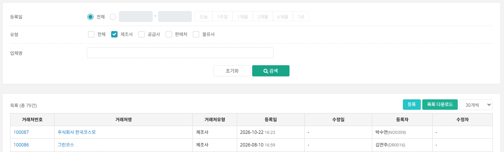
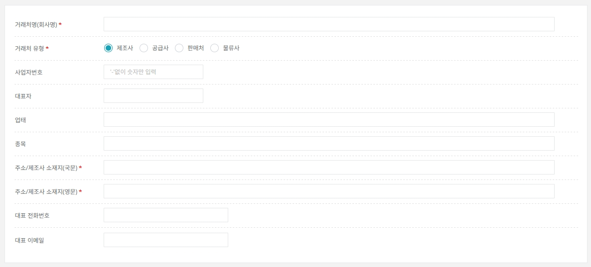

01. 거래처 관리
거래처 관리 화면 사용법
제조사와 공급사를 미리 등록하는 화면입니다. 품목을 등록할 때 제조사를 여기서 고르기 때문에, 품목 등록보다 먼저 끝내 두어야 합니다.
왜 거래처를 등록하나요? 거래처관리는
제조사의 주소 등 정보를 한 곳에서 관리하기 위한 메뉴입니다. 품목을 등록할 때 제조사를 선택하면 이 정보가 품목고시 등에 자동으로 들어갑니다.
- 품목 등록에서 제조사 검색이 안 되면 → 거래처관리에서 거래처 등록부터 해야 합니다.
- 품목에 나오는 제조사 정보가 없거나 틀리면 → 품목이 아니라 거래처관리에서 정보를 수정합니다.
이 페이지에서 확인할 내용
- 거래처관리 메뉴 찾기와 목록 보기
- 거래처 등록하기
- 자주 하는 실수
1 메뉴 찾기와 목록 보기
상단 메뉴 [상품마스터] → [거래처관리]로 이동하면 등록된 거래처 목록을 확인하고 새 거래처를 등록할 수 있습니다.
| 등록일 | 거래처를 등록한 기간으로 검색합니다. 기본은 전체입니다. |
|---|
| 유형 | 제조사 / 공급사 / 판매처 / 물류사 중 선택합니다. |
|---|
| 업체명 | 회사명으로 검색합니다. |
|---|

목록 우측 위 [등록] 버튼으로 새 거래처를 등록합니다. 거래처번호를 클릭하면 상세 화면이 열립니다.
Tip. 새로 등록하기 전에 업체명으로 먼저 검색해 이미 등록된 거래처인지 확인하세요. 같은 업체를 두 번 등록하면 품목 선택 시 헷갈립니다.
2 거래처 등록하기
[등록]을 클릭하면 아래 입력창이 열립니다. 유형은 용도에 맞게 고릅니다.
| 제조사 | 상품을 만드는 업체입니다. 품목 등록 시 제조업소/생산자로 선택됩니다. |
|---|
| 공급사 | 원료를 들여오는 업체입니다(원료 수입 등). |
|---|
| 필수 항목(*) | 거래처명(회사명), 거래처 유형, 주소/제조사 소재지(국문), 주소/제조사 소재지(영문) 4개입니다. 하나라도 비어 있으면 저장되지 않습니다. |
|---|
| 선택 항목 | 사업자번호(숫자만, '-' 없이), 대표자, 업태, 종목, 대표 전화번호, 대표 이메일 |
|---|

별표(*)가 붙은 항목은 꼭 입력해야 합니다.
주소/제조사 소재지 입력 시 주의. 제조사는 품목고시와 해외팀 업무에 그대로 쓰이므로 정확하게 입력하세요. 공급사는 수입 국가를 기재합니다. 품목 상세의 소재지 정보는 이 값을 자동으로 가져오므로, 바꿔야 하면 품목이 아니라 거래처관리에서 수정하세요.
자주 하는 실수 체크리스트
Q. 품목 등록에서 제조사 목록에 업체가 안 보여요.
거래처관리에 제조사 유형으로 등록되어 있는지 확인하세요. 공급사 유형으로만 등록되었다면 거래처 상세에서 유형을 바꾸거나 제조사로 다시 등록해야 합니다. 품목 상세의 제조사는 제조사·공급사 유형 등록 건에서만 다중 선택됩니다.
Q. 등록 버튼을 눌러도 다음으로 안 넘어가요.
필수 항목 4개(거래처명, 유형, 소재지 국문·영문) 중 비어 있는 곳이 있습니다. 영문 소재지를 빼먹는 경우가 많습니다.